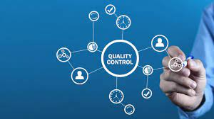

Relation Between Quality Management and Scope Management
Quality is a compilation of characteristics of an entity that make it possible for it to satisfy needs that are either stated or implied. Quality can also be defined as conformance to requirements. In other words, the project’s ability to meet its written specifications. Fitness for use is another way to define quality. Fitness for use is the ability of the product to be used as intended. Project quality management is used to ensure that the project will meet the client’s and users’ needs. As a project manager, it is your responsibility to manage the quality of each iteration of the project to ensure that it meets the client’s needs.
There are three main processes of quality management:
- Planning quality management
- Managing quality
- Controlling quality
Planning Quality
In the planning quality management process, you will identify requirements and standards for the quality of the project. You will also discuss with your team the most effective ways to meet these standards.
In the managing quality process, you will translate the requirements and standards found in quality management planning into actions and activities that can be done by your team during the project’s execution. You will also create quality reports, documents for testing and evaluation, change requests, updates to the project management plan, and updates to the project’s documents.
In the controlling quality process, you will monitor the specific results of the project to ensure their completeness, accuracy, and ability to meet the client’s expectations. This process uses many techniques and tools such as Pareto charts, quality control charts, and statistical sampling. By controlling quality, your team will output verified deliverables, work performance information, change requests, updates to the project management plan, and updates to the project’s documents.
Managing Quality
In order to plan quality management, you can design experiments to help identify which variables have the greatest influence on the results of a process within your project. Understanding the underlying factors that influence the outcome of a process is important for developing good standards of quality for your project. You must also communicate the correct actions to ensure quality control in a complete and readable format.Your organization’s standards for quality are important to include in your quality management plan because your project must conform to the organizations standards. Your quality management plan should address functionality, system outputs, performance, reliability, maintainability.
- Functionality is the system’s ability to perform its stated function. Features are characteristics that draw users to your product. You must ensure that these features achieve a high degree of functionality and accomplish specific goals within your project
- System outputs are the visible elements of the system. This includes screens and reports generated by the system. You must ensure that users can easily read these screens and the reports are in a format that is useful for your users.
- Performance deals with how well the product performs the intended use of the customer. To ensure a high level of performance you, your team, and the client must discuss the volumes of data and transactions that the system can manage, the number of simultaneous users, the projected rate of growth of users, the types of equipment on which the system will be deployed, as well as many other factors.
- Reliability is the ability of the product to perform as intended under normal conditions.
- Maintainability refers to how easy it is for future developers to fix or make adjustments to the software as needed.